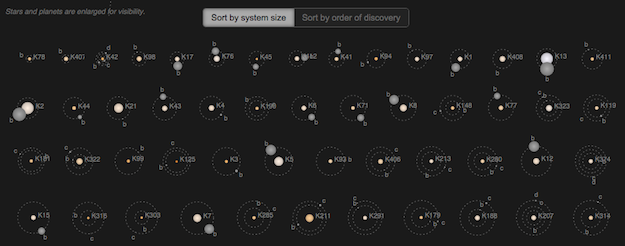
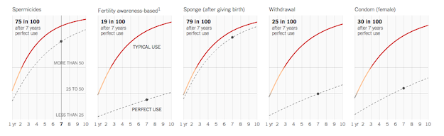

Small multiples should be a familiar visualization technique for most FlowingData readers. The key idea is to slice up your data and use a separate chart to visualize each slice. The end result is a grid of charts that all follow the same visual format, but show different pieces of the data. A chorus of little stories that can help tell a bigger one.
While the concept is simple, the benefits can be significant. Compared to a single larger chart, small multiples can help with overplotting (which is when some data is obscured or occluded because there are too many things being plotted). Compared to animation, small multiples present all of the data at once which makes it easier for viewers to naturally compare each facet with others instead of trying to flip back and forth between views.
FlowingData has covered small multiples and their uses many times over. We have used R to make small multiple bar charts and gridded maps. We have even seen an implementation of area charts that used D3 and provided some interactive capabilities in the form of filtering (which I'll get back to).
Tufte and Few have written pages and pages on small multiples - so I can write another tutorial, right? But even with this content around small multiples, a visualization as versatile as this has plenty more to give.
In this tutorial we are going to take another look at interactive small multiples and explore more possibilities available when we bring this visual to the web.
Specially, I'd like to talk about linked small multiples. Here, all the plots in the small multiple are linked and interact together in some way.
Before we get started with our own, it might be valuable to look at some successful examples of linked small multiples out there to get a sense for what kind of interactions are possible, and how they are getting used.
I've broken down the domain of linked small multiples into four types of interactions. Mostly, this just allows me to make up silly names for the interactions (which probably already have real names anyways), but it helps frame the conversation a bit.
And if you have a better name for one or more of these categories from the vis or UI/UX world, please let me know! There are five broad categories of linked small multiple interactions that we will look at. The visualizations can be:
To clarify a bit, we are focusing on interactions that affect all or many of the small multiple plots at the same time, so tooltips don't count. But if you are interested in small multiples that are interactive at the individual chart level, check out my small multiples with details on demand tutorial for one such example.
This is a common approach where the data is filtered or processed in some way and then the small multiples are updated to reflect this new data. The FlowingData visualization How Americans Spend Their Day, that served as the demo for the last D3 small multiples tutorial, is updateable. The filters update the plots with different subsets of the data to provide a greater exploration experience.

Another Great example of an updateable small multiple is part of a GitHut, a visualization of programming language popularity on Github.

Here, you can toggle between repository count and percent of total for each language, providing both absolute and relative metrics to compare.
With reorderable small multiples, interactions cause the positions of the individual plots to move. Sorting in different ways allows the viewer pick out different patterns in the data.
Still one of my favorite interactive small multiples, Jonathan Corum's always updating Kepler's Tally of Planets allows the viewer to reorder by discovery date or system size. This gives the viewer a historical perspective, as well as one that highlights the incredible diversity in the systems.
Here, part or all of the visualization is highlighted to bring a visual element to the forefront for comparison, or connect the plots in some way.
In the Upshot's look at the American middle class, they provide a wonderful small multiple to compare the US with other countries. You can mouse over one of the lines to highlight that country's data in each of the plots.

And recently, the Financial Times has provided an interesting twist on this idea in their EU unemployment tracker.

They show sets of small multiples for different metrics for each country, ordered by greatest to least for that metric. While this may break the purist form of small multiples, they also make the plots highlightable where that country's data is highlighted for each metric. With this format, you can easily read it worst to best (in terms of unemployment), but then also highlight a specific country. Nice!
Now we're cooking with fire! Or at least interesting interactions. Scrubbable small multiples display the values of individual data points. You've seen this before in line charts and bar charts, but with a scrubbable small multiple, you get values in all your plots.

I first saw this in 2012 in the New York Times piece about America's Tax Burden, but now it's everywhere.
Propublica's ambulance payout exposé uses this technique and was praised for it by Junk Chart's Kaiser Fung (and that's high praise).

And most recently, scrubbable small multiples were used to help explain the inefficiencies of birth control methods. The visual provides great within-plot comparisons, as well as between-plot comparisons with this approach.
I'm sure I missed more types of interactions. Have one and want to tell me? Just email it to me or write it in the comments. I did find a demonstration from Mike Bostock of a scrubbable + highlightable interaction where points in a small multiples of scatter plots were selectable in two dimensions. However, while this type of 'brushable' interaction would certainly be useful in some situations, so far I haven't found it used in the wild.
Ok, enough examples, let's get coding.
Many of these interactions could be used together to make even more interesting interactions, and that's what we are going to try in this tutorial. Let's start with a basic small multiples built in D3.js and then add in some of these interactions to see how they work.
You can download the code and follow along as we build up the visualization. It is again written in CoffeeScript, but I've also compiled it into straight JavaScript and saved that off - in case you don't want to give CoffeeScript a try.
If you have python installed (and if you are on a Mac or Linux box, you should have python by default), you can open up the code directory in your Terminal and run python's simple http server.
First, you are going to want to check the python version you have:
[sourcecode language="bash"] python --version [/sourcecode]
If it is python 2.x, you can run the web server with the command:
[sourcecode language="bash"] # start web server with python 2 python -m SimpleHTTPServer [/sourcecode]
If it is python 3.x, the syntax is a bit different:
[sourcecode language="bash"] # start web server with python 3 python -m http.server [/sourcecode]
Once you have the server running in the code's directory, you should be able to open up http://0.0.0.0:8000 in your web browser and see the visualization.
If anyone has problems on Windows getting started, let me know. If you are on a Windows machine, I'm terribly sorry for you. But, Jerome Cukier should have you covered with his Getting to Hello World with d3 post.
Ok, first the easiest part of any D3 project: loading the data. Well, the loading part is easy, but some times getting it into the format you want after you load it can be a bit of a pain.
The binding methodology of
[sourcecode language="javascript"] something <- function() blah blah blah yabba = dabba + 1 oink poink return poo [/sourcecode]